<!DOCTYPE html>
<html lang="pt-br">
<head>
  <meta charset="UTF-8">
  <meta name="viewport" content="width=device-width, initial-scale=1.0">
  <title>Clínica Multiser</title>
  <link rel="stylesheet" href="estilo.css">
</head>
<body>
  <header>
    <div class="top-banner">
      
    </div>
  </header>

  <main>
    <div class="team-grid">
      <a href="https://instagram.com/ana.psi" class="team-card" target="_blank" rel="noopener">
        
        
      </a>

      <a href="https://instagram.com/carlos.psi" class="team-card" target="_blank" rel="noopener">
        
        
      </a>

      <a href="https://instagram.com/juliana.psi" class="team-card" target="_blank" rel="noopener">
        
        
      </a>
    </div>
  </main>

  <footer>
    <div class="footer-content">
      
      <div class="footer-info">
        <p>Torre Norte - Av. Tancredo Neves, 1632 - sala 510 - Caminho das Árvores, Salvador - BA, 40301-155</p>
        <p>WhatsApp: (71) 99404-4195</p>
        <p>Email: andradeaislan837@gmail.com</p>
        <p class="copyright">Clínica Multiser © 2025 — Todos os direitos reservados</p>
      </div>
    </div>
  </footer>
</body>
</html>